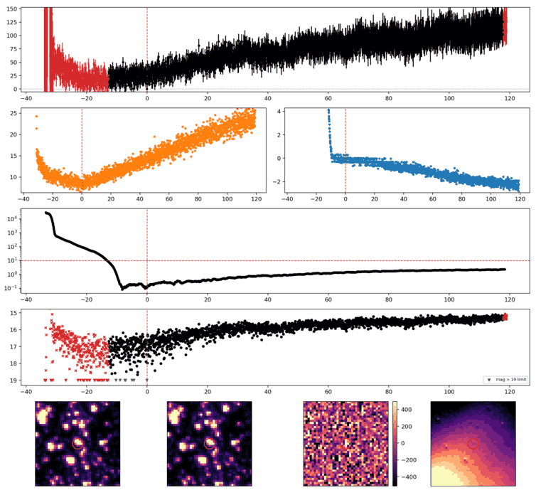
Search centered on refined position (250.6975443, -67.8381502 deg). Gaia coordinates are at J2016.0; proper motions are shown, without epoch propagation. A positional match does not change the candidate flags.
| Source ID / catalog entry | Separation (arcsec) | RA (deg) | Dec (deg) | G (mag) | BP (mag) | RP (mag) | Parallax ± error (mas) | PM RA* ± error (mas/yr) | PM Dec ± error (mas/yr) | RUWE | Variability |
|---|---|---|---|---|---|---|---|---|---|---|---|
| 5809281990449646848 | 3.892 | 250.6946979 | -67.8380235 | 11.852 | 12.468 | 11.106 | 0.625 ± 0.018 | 0.470 ± 0.009 | -7.431 ± 0.013 | 1.573 | NOT_AVAILABLE |
Retrieved 2026-10-09T18:27:41.029366+00:00
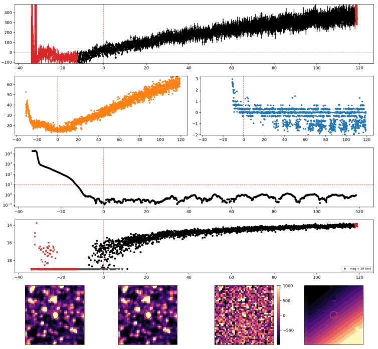
Search centered on refined position (200.9980855, -64.9032125 deg). Gaia coordinates are at J2016.0; proper motions are shown, without epoch propagation. A positional match does not change the candidate flags.
| Source ID / catalog entry | Separation (arcsec) | RA (deg) | Dec (deg) | G (mag) | BP (mag) | RP (mag) | Parallax ± error (mas) | PM RA* ± error (mas/yr) | PM Dec ± error (mas/yr) | RUWE | Variability |
|---|---|---|---|---|---|---|---|---|---|---|---|
| 5858809079420182912 | 1.673 | 200.9987822 | -64.9035712 | 20.314 | — | — | 0.275 ± 0.617 | -8.924 ± 0.571 | -4.102 ± 0.720 | 1.024 | NOT_AVAILABLE |
| 5858809079420186624 | 2.219 | 200.9966397 | -64.9031505 | 20.259 | 20.208 | 19.250 | -0.726 ± 0.693 | -8.321 ± 0.549 | -0.462 ± 0.816 | 1.056 | NOT_AVAILABLE |
| 5858809079420183168 | 3.471 | 200.9992465 | -64.9040414 | 18.641 | — | — | 0.001 ± 0.156 | -6.052 ± 0.142 | -1.418 ± 0.194 | 1.008 | NOT_AVAILABLE |
| 5858809079481509760 | 4.434 | 201.0002324 | -64.9040418 | 17.993 | 18.377 | 17.040 | 0.153 ± 0.097 | -8.283 ± 0.091 | -1.461 ± 0.125 | 1.032 | NOT_AVAILABLE |
| 5858809079420179072 | 4.450 | 200.9980393 | -64.9044484 | 18.864 | 19.773 | 18.073 | 0.043 ± 0.177 | -7.834 ± 0.177 | -1.870 ± 0.202 | 0.989 | NOT_AVAILABLE |
Retrieved 2026-10-09T18:27:45.666776+00:00
Representative chosen by category, detection count, then Gaussian S/N. Original measurements and classifications are retained below.
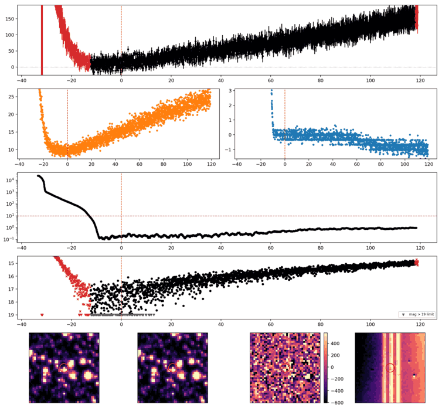
Search centered on refined position (217.1212464, -69.3097763 deg). Gaia coordinates are at J2016.0; proper motions are shown, without epoch propagation. A positional match does not change the candidate flags.
| Source ID / catalog entry | Separation (arcsec) | RA (deg) | Dec (deg) | G (mag) | BP (mag) | RP (mag) | Parallax ± error (mas) | PM RA* ± error (mas/yr) | PM Dec ± error (mas/yr) | RUWE | Variability |
|---|---|---|---|---|---|---|---|---|---|---|---|
| 5846482553321637632 | 4.529 | 217.1224964 | -69.3085982 | 18.254 | 18.876 | 17.398 | 0.404 ± 0.133 | -9.166 ± 0.138 | -4.341 ± 0.129 | 1.114 | NOT_AVAILABLE |
Retrieved 2026-10-09T18:27:54.162375+00:00
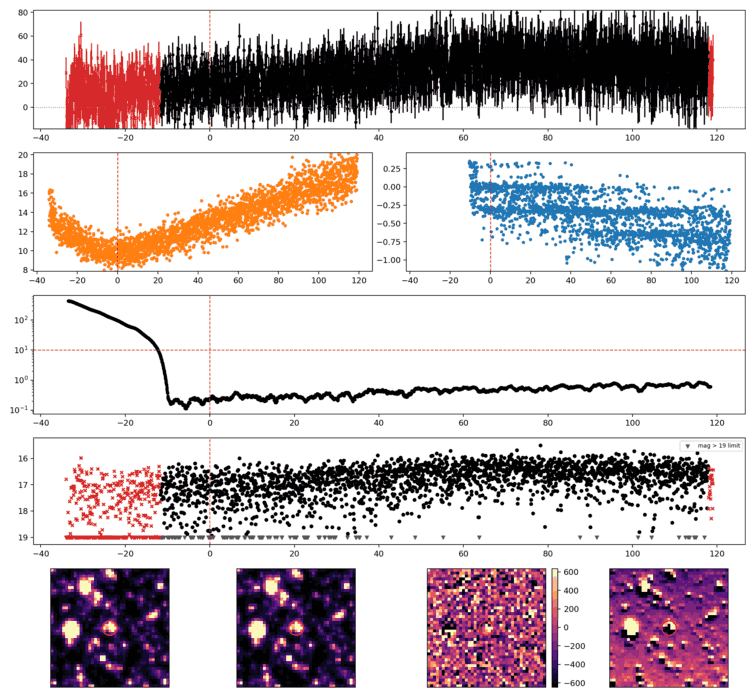
Search centered on refined position (203.4805987, -56.2864767 deg). Gaia coordinates are at J2016.0; proper motions are shown, without epoch propagation. A positional match does not change the candidate flags.
| Source ID / catalog entry | Separation (arcsec) | RA (deg) | Dec (deg) | G (mag) | BP (mag) | RP (mag) | Parallax ± error (mas) | PM RA* ± error (mas/yr) | PM Dec ± error (mas/yr) | RUWE | Variability |
|---|---|---|---|---|---|---|---|---|---|---|---|
| 6062946710328380416 | 2.404 | 203.4817013 | -56.2867440 | 20.271 | 20.988 | 19.003 | -0.471 ± 0.765 | -5.703 ± 0.468 | -1.501 ± 0.434 | 1.101 | NOT_AVAILABLE |
Retrieved 2026-10-09T18:27:57.666704+00:00
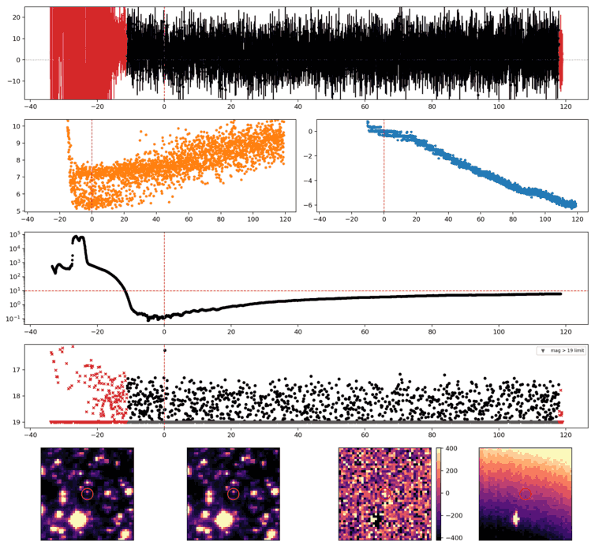
Search centered on refined position (294.1915791, -65.4402962 deg). Gaia coordinates are at J2016.0; proper motions are shown, without epoch propagation. A positional match does not change the candidate flags.
| Source ID / catalog entry | Separation (arcsec) | RA (deg) | Dec (deg) | G (mag) | BP (mag) | RP (mag) | Parallax ± error (mas) | PM RA* ± error (mas/yr) | PM Dec ± error (mas/yr) | RUWE | Variability |
|---|---|---|---|---|---|---|---|---|---|---|---|
| 6440216220977576960 | 2.011 | 294.1903458 | -65.4400741 | 18.804 | 19.188 | 18.239 | 0.334 ± 0.206 | -0.209 ± 0.106 | -6.566 ± 0.158 | 0.906 | NOT_AVAILABLE |
Retrieved 2026-10-09T18:28:06.972849+00:00
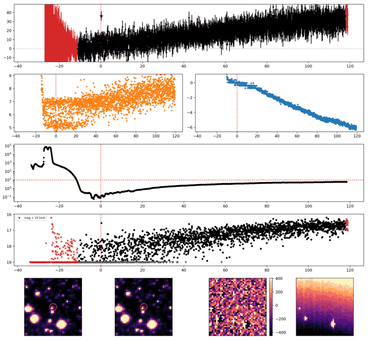
Search centered on refined position (294.1374391, -65.3849724 deg). Gaia coordinates are at J2016.0; proper motions are shown, without epoch propagation. A positional match does not change the candidate flags.
No Gaia DR3 sources found within 5 arcseconds.
Retrieved 2026-10-09T18:28:11.174282+00:00
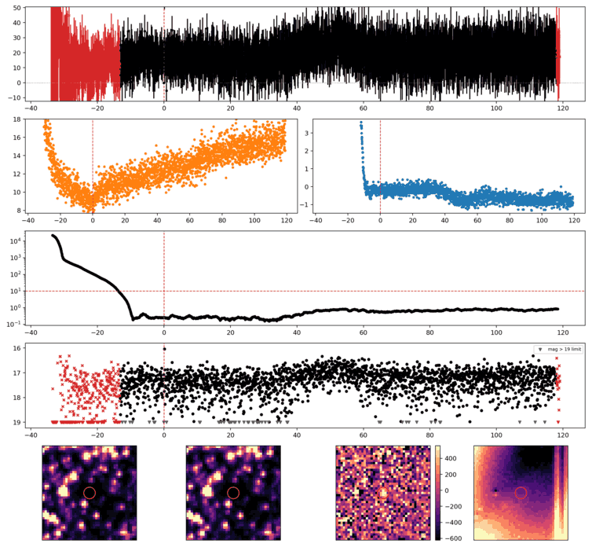
Search centered on refined position (189.3102649, -69.4938903 deg). Gaia coordinates are at J2016.0; proper motions are shown, without epoch propagation. A positional match does not change the candidate flags.
No Gaia DR3 sources found within 5 arcseconds.
Retrieved 2026-10-09T18:28:18.009397+00:00
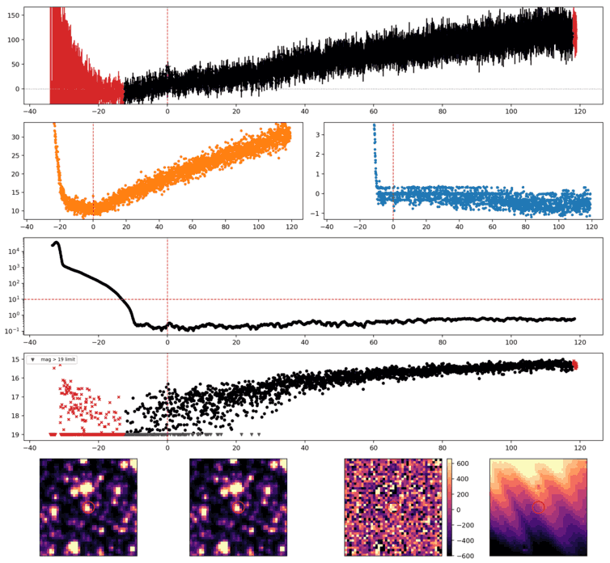
Search centered on refined position (200.7822159, -67.8207762 deg). Gaia coordinates are at J2016.0; proper motions are shown, without epoch propagation. A positional match does not change the candidate flags.
| Source ID / catalog entry | Separation (arcsec) | RA (deg) | Dec (deg) | G (mag) | BP (mag) | RP (mag) | Parallax ± error (mas) | PM RA* ± error (mas/yr) | PM Dec ± error (mas/yr) | RUWE | Variability |
|---|---|---|---|---|---|---|---|---|---|---|---|
| 5845443106842564608 | 0.644 | 200.7824196 | -67.8206146 | 11.518 | 12.249 | 10.686 | 0.855 ± 0.012 | -11.696 ± 0.010 | -1.528 ± 0.014 | 0.832 | NOT_AVAILABLE |
| 5845443106853004800 | 2.448 | 200.7805041 | -67.8209879 | 20.276 | 17.258 | 16.072 | -0.385 ± 1.166 | -4.245 ± 1.101 | -4.330 ± 1.848 | 1.106 | NOT_AVAILABLE |
Retrieved 2026-10-09T18:28:22.362740+00:00
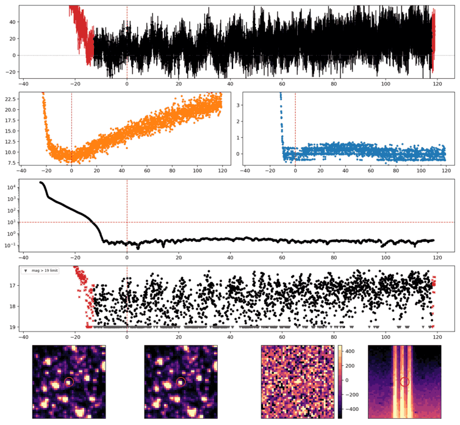
Search centered on refined position (205.7848475, -71.4007827 deg). Gaia coordinates are at J2016.0; proper motions are shown, without epoch propagation. A positional match does not change the candidate flags.
| Source ID / catalog entry | Separation (arcsec) | RA (deg) | Dec (deg) | G (mag) | BP (mag) | RP (mag) | Parallax ± error (mas) | PM RA* ± error (mas/yr) | PM Dec ± error (mas/yr) | RUWE | Variability |
|---|---|---|---|---|---|---|---|---|---|---|---|
| 5840756404135008256 | 4.501 | 205.7874595 | -71.3998505 | 18.427 | 18.977 | 17.662 | 0.740 ± 0.134 | -7.523 ± 0.158 | -5.072 ± 0.174 | 1.036 | NOT_AVAILABLE |
Retrieved 2026-10-09T18:28:26.095800+00:00
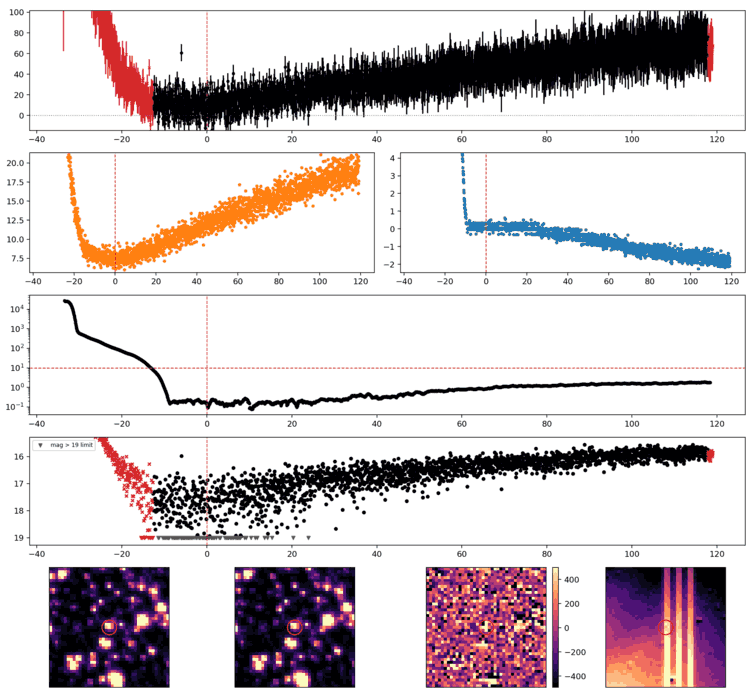
Search centered on refined position (249.2224790, -68.0207044 deg). Gaia coordinates are at J2016.0; proper motions are shown, without epoch propagation. A positional match does not change the candidate flags.
| Source ID / catalog entry | Separation (arcsec) | RA (deg) | Dec (deg) | G (mag) | BP (mag) | RP (mag) | Parallax ± error (mas) | PM RA* ± error (mas/yr) | PM Dec ± error (mas/yr) | RUWE | Variability |
|---|---|---|---|---|---|---|---|---|---|---|---|
| 5809219902398748288 | 3.479 | 249.2209223 | -68.0199333 | 18.948 | 19.224 | 18.237 | 0.246 ± 0.187 | 0.182 ± 0.107 | -2.938 ± 0.156 | 1.002 | NOT_AVAILABLE |
Retrieved 2026-10-09T18:28:30.958388+00:00
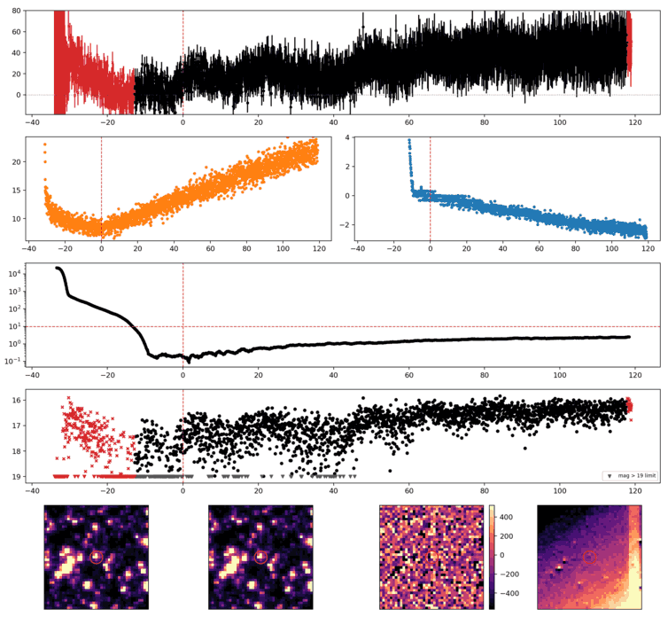
Search centered on refined position (240.6236448, -67.2499733 deg). Gaia coordinates are at J2016.0; proper motions are shown, without epoch propagation. A positional match does not change the candidate flags.
No Gaia DR3 sources found within 5 arcseconds.
Retrieved 2026-10-09T18:28:37.271517+00:00
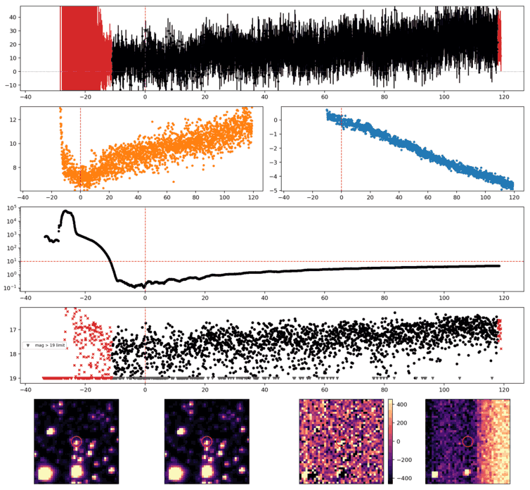
Search centered on refined position (277.5045452, -65.2564526 deg). Gaia coordinates are at J2016.0; proper motions are shown, without epoch propagation. A positional match does not change the candidate flags.
No Gaia DR3 sources found within 5 arcseconds.
Retrieved 2026-10-09T18:28:46.576281+00:00
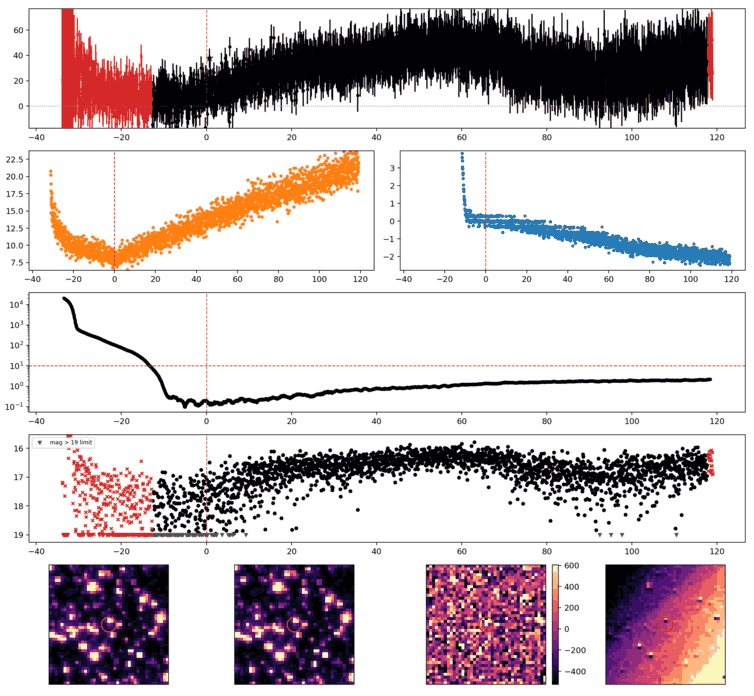
Search centered on refined position (235.3078662, -69.7793012 deg). Gaia coordinates are at J2016.0; proper motions are shown, without epoch propagation. A positional match does not change the candidate flags.
No Gaia DR3 sources found within 5 arcseconds.
Retrieved 2026-10-09T18:28:55.191204+00:00